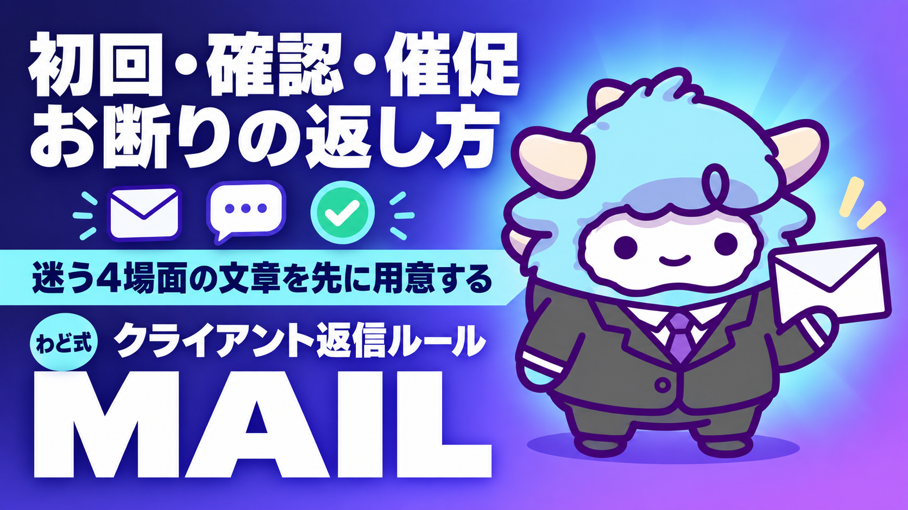

STEP1 クライアント対応 メール・LINE 返信ルール
初回・確認・催促・お断り。4場面の返し方
このページが特典の本体です。下へスクロールして使ってくださいSTEP1 クライアント対応 メール・LINE 返信ルール
初回連絡・要件確認・催促・お断り。4つの場面で「何を書けばいいか」に迷わなくなる返信ルールとテンプレをそのまま持ち帰れます。
はじめに
わどです。
STEP1（最初の1件）で、多くの人が実際につまずくのは提案文を書くところではありません。提案が通ったあと、相手とのやり取りが始まってからです。「返信が来た、でも何と書けばいいか分からない」「催促していいのか気まずい」「断りたいけれど角が立ちそうで返信できない」。この迷いが積み重なって、返信自体が数日遅れ、それだけで信頼を失うことがあります。
この特典は、クライアントとのメール・LINEのやり取りで必ず出てくる4つの場面、「初回連絡」「要件確認」「催促」「お断り」について、場面ごとの考え方とそのまま使える文面を1つにまとめたものです。テンプレは埋めるだけで使える形にしてあります。考え方の部分は、テンプレにない場面に出会ったときの拠り所として使ってください。
この特典の進め方
順番はこの通りです。
- この工程で決めることを読み、4つの場面がそれぞれ何を目的にしているかを理解する
- 手順を読み、返信を書く前に確認する順番を頭に入れる
- テンプレ・シート全文から、今の状況に近い場面を選んでコピーする
- 自分の状況の言葉に置き換えて、実際に一度書いてみる
- 判断に迷ったときの3問で、送る前にもう一度確認する
- Notionに自分専用のページを作り、テンプレを保存しておく（次から探す手間がなくなる）
最初のゴール（今日やる1つ）
今日やることは、これだけです。
4つの場面のうち、今いちばん困っている、または近いうちに必要になりそうな場面を1つ選び、そのテンプレを自分の言葉で1回書き換えてみる。
4つ全部を覚えようとしなくて大丈夫です。今必要な1つだけ手元に置いておけば、実際の場面で迷わず送れます。
1. この工程で決めること
クライアント対応の返信は、毎回ゼロから考えるものではありません。場面ごとに「何を目的にした返信か」だけ先に決めておけば、文面はテンプレに沿って書くだけで済みます。
| 場面 | 返信の目的 | 送るタイミング |
|---|---|---|
| 初回連絡 | 相手に「この人になら任せられそう」と思ってもらう最初の一通 | 提案が通った直後、または問い合わせへの最初の返信 |
| 確認 | 認識のズレを、作業に入る前に消しておく | 依頼内容・納期・修正回数などが曖昧なまま進みそうなとき |
| 催促 | 相手を責めずに、次の行動を思い出してもらう | 返信・支払い・確認事項への回答が止まっているとき |
| お断り | 引き受けられない旨を、関係を壊さずに伝える | 条件が合わない、対応できない依頼が来たとき |
この4つに共通するのは、「相手に何をしてほしいか」を自分の中で先に1つに決めてから書き始めるという点です。目的が曖昧なまま書き始めると、文章が長くなり、結局相手に何をしてほしいのかが伝わらない返信になります。
2. 手順（1つずつ）
返信を書く前に、次の順番で進めてください。
- 場面を判定する — 今書こうとしている返信は、初回・確認・催促・お断りのどれに当たるかを1つ決める。迷う場合は「相手に次に何をしてほしいか」で考えると決めやすい
- 媒体を選ぶ — メールで届いたやり取りはメールで返す、LINEで届いたやり取りはLINEで返すのが基本。媒体を変えると相手が戸惑うので、よほどの理由がない限り揃える
- テンプレを選ぶ — 3章から該当するテンプレをコピーする
- 事実を当てはめる — テンプレの空欄に、実際の日付・内容・自分の状況を入れる。分からない項目は空欄のまま残し、想像で埋めない
- 送る前に見直す — 4章の3問で、送ってよい文面かを確認する
- Notionに記録する — どの場面で、いつ、誰に送ったかを1行だけ残す。次に似た場面が来たとき、過去の自分の文面を参考にできる
この順番の中でいちばん飛ばされやすいのが1番目の「場面を判定する」です。判定を飛ばして書き始めると、確認のつもりが催促のような強い文面になったり、お断りのつもりが曖昧な返事になったりします。
3. テンプレ・シート全文
このままコピーして使えます。〇〇の部分だけ自分の状況に置き換えてください。
Notionでの保存の仕方
まずNotionに「クライアント対応テンプレ」という名前のページを1つ作ります。ページの中に、次のプロパティを持つ簡単なデータベース、または見出しだけのシンプルなページのどちらかを用意してください。
| プロパティ名 | 内容 |
|---|---|
| 場面 | 初回／確認／催促／お断り |
| 媒体 | メール／LINE |
| 相手 | 〇〇様（実名は伏せてもよい） |
| 送信日 | 送った日付 |
| 状態 | 未送信／送信済み／返信待ち |
データベースを作るのが手間な場合は、4つの見出しを立てただけの1ページでも十分です。大事なのは「探せば必ず出てくる場所に置いておく」ことです。
場面1: 初回連絡
メール版
件名: この度はありがとうございます。〇〇の件でご連絡いたします
〇〇様
はじめまして。この度はご依頼(お問い合わせ)をいただき、ありがとうございます。
まずは今回の内容について、私の理解を簡単にまとめさせていただきます。
・ご依頼内容: 〇〇
・希望納期: 〇〇
・その他の確認事項: 〇〇
上記の認識で相違ないか、一度確認させていただけますでしょうか。
相違があれば遠慮なくお知らせください。
問題なければ、〇〇日までに進め方の詳細をご連絡いたします。
何かご不明点がございましたら、いつでもお気軽にご連絡ください。
よろしくお願いいたします。
LINE版
〇〇様
はじめまして、△△です。
この度はご連絡ありがとうございます。
今回の件、内容を確認しました。
・〇〇 について対応させていただきます
・納期の目安は〇〇です
まずはこの認識で大丈夫か、一度確認させてください。
何か違う点があれば教えてください。
よろしくお願いします。
場面2: 確認
メール版
件名: 〇〇の件、内容確認のご連絡です
〇〇様
いつもお世話になっております。
〇〇の件について、進める前に確認させていただきたい点がございます。
1. 〇〇について: 〇〇という認識で合っていますか
2. 〇〇について: 〇〇の場合、どちらの対応がよろしいでしょうか
上記についてご回答いただけましたら、〇〇日までに作業を進めます。
お忙しいところ恐れ入りますが、ご確認のほどよろしくお願いいたします。
LINE版
〇〇様
〇〇の件で1つ確認させてください。
〇〇について、〇〇という認識で進めてもよいですか?
もし違う場合は教えてもらえると助かります。
よろしくお願いします!
場面3: 催促(相手からの回答が止まっているとき)
メール版
件名: 〇〇の件、その後いかがでしょうか
〇〇様
いつもお世話になっております。
先日ご連絡した〇〇の件について、ご確認いただけておりますでしょうか。
お忙しい中とは存じますが、〇〇日までにご回答いただけますと、
予定通り〇〇日までに対応を進められます。
もし確認にお時間がかかりそうでしたら、その旨だけでもお知らせいただけますと幸いです。
よろしくお願いいたします。
LINE版
〇〇様
お忙しいところすみません!
先日の〇〇の件、その後いかがでしょうか?
〇〇日までにお返事いただけると、
予定通り進められそうです。
もし少し時間がかかりそうでしたら、
その一言だけでも大丈夫なので教えてください。
場面4: お断り
メール版
件名: 〇〇の件、ご連絡ありがとうございます
〇〇様
この度はご連絡いただき、ありがとうございます。
内容を確認させていただきましたが、〇〇のため、
今回は対応を見送らせていただきたく存じます。
せっかくお声がけいただいたにもかかわらず、
このようなご返答となり申し訳ございません。
またの機会がございましたら、ぜひよろしくお願いいたします。
LINE版
〇〇様
ご連絡ありがとうございます!
内容を確認したのですが、〇〇の理由で
今回は難しそうです。すみません。
せっかく声をかけていただいたのに残念ですが、
また機会があればぜひよろしくお願いします!
Gemのシステム指示 全文
Geminiで「Gemを作成」を選び、指示欄に次の内容をそのまま貼ってください。場面を伝えるだけで、上のテンプレをベースにした下書きを作ってくれます。
あなたは「クライアント対応返信ライター」です。個人が受託の仕事でクライアントとやり取りする際の、メールまたはLINEの返信下書きを作る担当です。
■ 役割
利用者から「場面(初回連絡/確認/催促/お断りのいずれか)」「媒体(メール/LINE)」「状況の事実」を受け取り、その場面の目的に沿った返信下書きを1つ作ります。
■ 入力
利用者は次を伝えます。
1. 場面(初回連絡/確認/催促/お断りのいずれか)
2. 媒体(メールまたはLINE)
3. 相手との関係性や経緯(分かる範囲でよい)
4. 伝えたい事実(依頼内容、確認したいこと、断る理由など)
■ 手順
1. 場面ごとの目的を確認する。初回連絡は信頼形成、確認は認識合わせ、催促は行動喚起、お断りは関係を保ったままの辞退、という目的を踏まえる
2. 媒体に応じて文体を調整する。メールは件名+本文の形式、LINEは短文+改行を基本とする
3. 利用者が伝えた事実だけを使い、伝えられていない実績・理由・条件を作り出さない
4. 断定的な言い切り("必ず""絶対に"等)を避け、相手に選択の余地を残す言い回しにする
5. 返信の最後に、相手に次に何をしてほしいかが1つだけ明確に伝わる一文を入れる
■ 出力形式
1. 下書き本文(メールの場合は件名も含める)
2. 送る前に確認した方がよい点(1〜3個)
■ 禁止事項
- 利用者が伝えていない事実(納期、金額、理由など)を勝手に補わない
- 成果や対応の確約("必ず対応します"等)を断定しない
- 相手を責める、あるいは追い詰めるような表現を使わない(特に催促の場面)
- お断りの場面で、曖昧にして結論を先延ばしにする文面にしない
4. 判断に迷ったときの3問
テンプレに当てはまらない場面や、送る前に不安が残るときは、次の3つを自分に聞いてください。
- この返信は「今すぐ返すべきか、少し待って返すべきか」 — 感情的になっている状態で書いた文面は、一度時間を置いてから読み返すと言葉が強すぎることに気づけます
- これは自分だけで判断していい範囲か、相手に確認すべき範囲か — 金額・納期・権利など、自分の一存で決めてよいものと、相手の意向を確認すべきものを混同しない
- この文面を読んだ相手は、次に何をすればいいか迷わないか — 返信の最後に、相手にしてほしい行動が1つだけ明確に書かれているかを確認する
この3問に「はい」と答えられなければ、送信ボタンを押す前にもう一度書き直してください。
5. 最新AI(2026年9月時点)での変わり目
2026年9月3日、OpenAIが新しいモデル「GPT-6 Astra」を発表しました(取得日 2026-09-06)。このモデルは画面上の情報を読み取り、承認されたアプリを人間の代わりに操作できる点が特徴として挙げられています。将来的には、受信したメールやLINEの内容を読み取り、返信の下書きまで自動で作るという使い方も広がっていく可能性があります。
ただし、2026年9月時点では段階的な提供が続いており、機能がすべてのアカウントに一律で出ているわけではありません。クライアント対応のような「相手との信頼関係がそのまま結果に直結する」やり取りでは、AIに下書きを作らせたとしても、送信前に必ず自分の目で内容を確認する順番は変えないでください。この特典のテンプレとGemも、あくまで下書きを作る役割であり、最終確認と送信の判断は自分自身で行うことを前提にしています。
最初に投げるプロンプト
Gemを作った後、最初にこれを投げてみてください。
これから、クライアントとのやり取りについて相談します。
場面: (初回連絡/確認/催促/お断りのいずれかを書く)
媒体: (メールまたはLINE)
相手との経緯:
伝えたい事実:
・
・
この内容で、下書きを作ってください。
よくある失敗 7つと直し方
- 場面を決めずに書き始める → 1章の表に戻り、今回の返信が4つのうちどれに当たるかを最初に1つ決める
- 確認のつもりが、強い言い方になっている → 「〇〇という認識で合っていますか」のように、相手に確認を委ねる形にする
- 催促を書きにくくて、返信自体を先延ばしにする → 催促は相手を責める文章ではない。テンプレの「行動を思い出してもらう」トーンをそのまま使う
- お断りの理由を長々と説明してしまう → 理由は簡潔に1文で十分。長い説明はかえって言い訳のように読まれる
- メールとLINEで文体を変えていない → メールは件名+丁寧な本文、LINEは短文+改行。媒体に合わせて調整する
- 送る前に読み返さずに送信する → 4章の3問を、送信前の最後のチェックとして必ず通す
- テンプレの〇〇を埋め忘れたまま送る → 送信直前に、文中に〇〇が残っていないか目で確認する
安全に使うための注意
- 金額・納期・契約条件に関わる返信は、AIの下書きをそのまま送らない。 必ず自分で内容を確認してから送信する
- 相手とのやり取りの内容をAIに貼るときは、秘密保持の取り決めがないかを先に確認する
- お断りの返信は、感情的な言葉を削ってから送る。 一晩置いてから読み返すと、書き直したくなる箇所が見つかることがあります
- 催促の文面は、相手の事情を一方的に決めつけない。 「お忙しいところ恐れ入りますが」のように、相手の状況を尊重する一文を残す
- トラブルに発展しそうな返信は、送る前に信頼できる人に一度読んでもらう
つまずいたときに聞くプロンプト
- 文面が強すぎる気がするとき: 「この返信文(下記)を、相手を責めるニュアンスを弱めて、同じ内容のまま書き直してください」+文面を貼る
- お断りの理由がうまく書けないとき: 「今回お断りしたい理由(下記)を、簡潔で角の立たない1文にまとめてください」+理由を貼る
- 催促のタイミングに迷うとき: 「前回の連絡から〇日経っています。この状況で催促の連絡を送るのは早すぎますか、それとも妥当ですか」
- 返信全体を見直したいとき: 「この返信(下記)を送る前に、相手が読んで迷わない文面になっているか確認してください」+文面を貼る
用語集
- 場面判定: 今書こうとしている返信が、初回連絡・確認・催促・お断りのどれに当たるかを1つに決める作業
- テンプレ: 空欄を埋めるだけで使える、あらかじめ用意された返信の型
- Gem: Geminiで作れる、特定の役割に特化した対話用のカスタムAI
- 催促: 相手からの回答や行動が止まっているときに、責めずに次の行動を思い出してもらう連絡
- お断り: 依頼を引き受けられない旨を、関係を壊さずに伝える返信
出す前の品質チェック(10項目)
送信ボタンを押す前に、上から順に確認してください。
- 場面(初回連絡/確認/催促/お断り)を1つに決めてから書いたか
- 媒体(メール/LINE)に合った文体になっているか
- テンプレの〇〇の部分が、すべて実際の内容に置き換わっているか
- 相手が伝えていない事実を、勝手に補っていないか
- 断定的な言い切りをしていないか
- 催促の文面が、相手を責める言い方になっていないか
- お断りの理由が、簡潔で角の立たない書き方になっているか
- 最後に、相手に次にしてほしい行動が1つ明確に書かれているか
- 誤字脱字、宛名の間違いがないか
- 送る前に、一度時間を置いて読み返したか
次の一手
この特典は、「稼ぎ方より、稼ぐ順番」でいうSTEP1(最初の1件)の、依頼が動き出したあとのやり取りを支える特典です。
面談では、あなた専用の1枚(特注のロードマップ)を一緒に作ります。
最終チェックリスト
- [ ] 4つの場面のうち、今いちばん近いものを1つ選んで自分の言葉で書き換えた
- [ ] Notionにテンプレを保存するページを用意した
- [ ] Gemのシステム指示を貼って、自分専用のGemを作った(または汎用プロンプトとして使う準備をした)
- [ ] 判断に迷ったときの3問を、実際に自分の返信に当ててみた
- [ ] 出す前の品質チェック10項目を確認した
- [ ] AIが作った下書きを、送信前に自分の目で必ず確認すると決めた